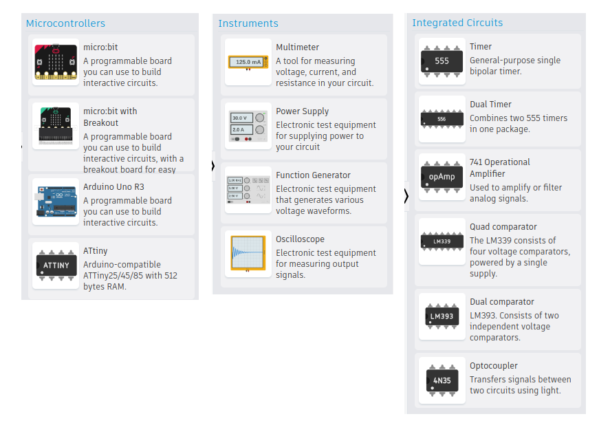

แนะนำซอฟต์แวร์ Autodesk Tinkercad Circuits#
Keywords: Tinkercad, Virtual Circuit Prototyping, Online Circuit Simulator, 123D Circuits.io
- แนะนำ Autodesk Tinkercad
- ความเป็นมาของ Tinkercad - Circuits
- ความเป็นมาของบริษัท Circuits.io
- ซอฟต์แวร์ Autodesk Tinkercad - Circuits ในปัจจุบัน
- รายการอุปกรณ์สำหรับการต่อวงจร (Components)
▷ แนะนำ Autodesk Tinkercad#
Tinkercad เป็นเว็บไซต์ที่เปิดให้บริการโดยบริษัท Autodesk Inc. ในรูปแบบของซอฟต์แวร์ในระบบคลาวด์และมีการใช้งานผ่านหน้าเว็บเบราว์เซอร์ของผู้ใช้ แบ่งเป็น 3 ส่วนหลักได้แก่
- 3D Design สำหรับการออกแบบ 3 มิติ เช่น การสร้างชิ้นงาน เพื่อนำไปผลิตหรือสร้างชิ้นงานด้วยเครื่อง 3D Printer เป็นต้น
- CodeBlocks สำหรับการฝึกเขียนโค้ดด้วยการต่อบล็อก (Block-based Coding) สำหรับการออกแบบ 3 มิติ ที่ใช้วิธีการเขียนโค้ดและตั้งค่าพารามิเตอร์ของการออกแบบชิ้นงานได้
- Circuits สำหรับการออกแบบวงจรไฟฟ้า-อิเล็กทรอนิกส์ โดยการวาดผังวงจรและจำลองการทำงาน
▷ ความเป็นมาของ Tinkercad - Circuits#
ในอดีตบริษัท Autodesk ได้เปิดเว็บไซต์ที่มีชื่อว่า "123D Circuits.io" ในเดือนกันยายน พ.ศ. 2556 (September 2013) เป็นบริการฟรีสำหรับการออกแบบและจำลองการทำงานวงจรไฟฟ้า-อิเล็กทรอนิกส์ โดยเน้นกลุ่มผู้ใช้ที่เป็นเมกเกอร์ หรือออกแบบวงจรเป็นงานอดิเรก ผู้ใช้สามารถจำลองการทำงานของวงจรบนเบรดบอร์ดได้เสมือนจริง (Virtual Breadboard based Circuit Design และ Interactive Simulation) มีอุปกรณ์เครื่องมือวัดแบบเสมือนจริง (Virtual Instruments) เพื่อวัดแรงดันและกระแสไฟฟ้า หรือออสซิลโลสโคป (Single-Channel Oscilloscope) เพื่อดูคลื่นสัญญาณไฟฟ้าจากวงจรอิเล็กทรอนิกส์ได้
รูป: เบรดบอร์ดที่มีให้เลือกหลายขนาดสำหรับการต่อวงจรเสมือนจริง
รูป: แหล่งจ่ายไฟฟ้ากระแสตรง เครื่องสร้างสัญญาณไฟฟ้า และเครื่องมือวัดสัญญาณทางไฟฟ้า
"123D Circuits.io" มีประเภทของอุปกรณ์ไฟฟ้าและอิเล็กทรอนิกส์ให้เลือกใช้งานไม่มากนัก แต่สามารถใช้บอร์ด Arduino Uno และเขียนโค้ดจำลองการทำงานร่วมกับวงจรอื่นได้ ผู้ใช้สามารถใช้เว็บเบราว์เซอร์ในการทำงานได้ ไม่จำเป็นต้องติดตั้งโปรแกรมหรือซอฟต์แวร์เพิ่ม ไฟล์ในการออกแบบต่าง ๆ ก็เก็บไว้ในระบบคลาวด์ และสามารถแชร์ให้ผู้อื่นดูหรือนำไปใช้งานได้ ดังนั้น 123D Circuits จึงเป็นซอฟต์แวร์และการบริการในประเภท Cloud-based Electronics Design System
ในช่วงเวลาดังกล่าว ซอฟต์แวร์ในลักษณะนี้เริ่มมีมากขึ้น เช่น ซอฟต์แวร์ประเภท Web App ที่มีชื่อว่า Upverter (ได้ถูกซื้อไปโดยบริษัท Altium ในปีพ.ศ. 2560) และต้องการหารายได้จากการรับผลิตแผ่น PCB เมื่อมีผู้ใช้ออกแบบแผงวงจรด้วยซอฟต์แวร์ดังกล่าวแล้ว
รูป: 123D Circuits.io (รูปภาพโดย Karel Bruneel / Circuits.io เมื่อปีค.ศ. 2013)
รูป: หน้าเว็บไซต์หลักของ 123D Circuits.io (รูปภาพบันทึกไว้เมื่อปีค.ศ. 2015 โดยผู้เขียน)
รูป: ตัวเลือกสำหรับการใช้งานบนหน้าเว็บไซต์ 123D Circuits.io เช่น Electronics Lab Hub และ PCB Design Hub เป็นต้น
รูป: การใช้งานในส่วนที่เรียกว่า Electronics Lab Hub
รูป: ตัวอย่างการสร้างวงจรและต่อวงจรบนเบรดบอร์ดเสมือนจริง
จากรูปวงจรตัวอย่าง แสดงให้เห็นการสร้างหรือต่อวงจรไฟฟ้า-อิเล็กทรอนิกส์พื้นฐานอย่างง่าย ที่ประกอบด้วยตัวไดโอดเปล่งแสง (LED) ตัวต้านทาน (เลือกค่าความต้านทานอย่างเช่น 330Ω) สวิตช์เลื่อน (Slide Switch) และแบตเตอรี่ (Battery) แบบ AA / 1.5V จำนวน 2 ก้อน นำมาต่ออนุกรมกัน
เมื่อต่อวงจรไฟฟ้าในรูปตัวอย่างได้ครบถ้วนและถูกต้องแล้ว ผู้ใช้สามารถทำขั้นตอนการจำลองการทำงานของวงจร (Start / Stop Simulator) สามารถเปลี่ยนตำแหน่งของสวิตช์เลื่อนได้ และทำให้เห็นการเปลี่ยนแปลงสถานะติดหรือดับของ LED ได้
รูป: ตัวอย่างการสร้างวงจรและต่อวงจรบนเบรดบอร์ดเสมือนจริง โดยใช้บอร์ด Arduino และเขียนโค้ด
รูป: การจำลองการทำงานวงจรร่วมกับการทำงานของโค้ด Arduino โดยใช้บอร์ด Uno มีการส่งข้อความออกทางพอร์ตอนุกรม (Serial) แสดงผลในส่วนที่เรียกว่า Serial Monitor
รูป: การใช้มัลติมิเตอร์เพื่อวัดกระแสไฟฟ้าในขณะที่จำลองการทำงานของวงจร
รูป: รายการอุปกรณ์ (แสดงให้เห็นบางส่วน) ที่สามารถเลือกมาใช้ในการต่อวงจรเสมือนจริงได้
▷ ความเป็นมาของบริษัท Circuits.io#
เรื่องราวความเป็นมาของบริษัท Circuits.io โดยสังเขป มีดังนี้
- Autodesk 123D Circuits เกิดขึ้นจากการทำงานร่วมกันระหว่างสองบริษัทคือ Autodesk และ Circuits.io ซึ่งเป็นบริษัท Tech Startup จากประเทศเบลเยียม (Belgium)
- Circuits.io เริ่มต้นในปีพ.ศ. 2555 โดยมีสองผู้ร่วมก่อตั้งสองคนคือ Karel Bruneel และ Benjamin Schrauwen และมีพนักงานทั้งหมดประมาณ 6 คน
- Bruneel จบปริญญาเอกทางด้านวิศวกรรมไฟฟ้าและทำงานหลังจบป.เอาและวิจัย (Post-doc) เกี่ยวกับสถาปัตยกรรมและการออกแบบวงจรสำหรับชิป FPGAs (Field Programmable Gate Arrays) ที่มหาวิทยาลัย Ghent University (Belgium)
- Schrauwen เป็นอาจารย์สอนทางด้าน Machine Learning & Robotics ที่มหาวิทยาลัยดังกล่าวในขณะนั้น ก่อนลาออกมาเปิดบริษัท
- ทั้งสองเคยได้ทำงานร่วมกันในโครงการวิจัยที่มีชื่อว่า Dwengo.org ซึ่งพัฒนาซอฟต์แวร์และฮาร์ดแวร์สำหรับส่งเสริมการเรียนรู้ด้าน STEM เช่น การเขียนโปรแกรมหุ่นยนต์โดยใช้ Block Coding การออกแบบบอร์ดไมโครคอนโทรลเลอร์ที่มีชื่อว่า "Dwengo" ที่ใช้ชิปไมโครคอนโทรลเลอร์ AT90USB646 เขียนโปรแกรมด้วย Arduino Sketch หรือเขียนโค้ดด้วยการต่อบล็อก (Blockly-style Coding) บนหน้าเว็บไซต์ https://blockly.dwengo.org/?lang=en และนำไปใช้กับหุ่นยนต์เคลื่อนที่ได้ด้วยล้อ เป็นต้น
- ในช่วงแรก Circuits.io เป็น Web App ในประเภทของซอฟต์แวร์ EDA (Electronic Design Automation) สำหรับการออกแบบวงจร (Online Schematic & PCB Layout Design) ที่ให้บริการฟรี ผู้ใช้สามารถสร้างวงจรต่าง ๆ แล้วแชร์ไว้ในไลบรารี เรียกว่า Open Source Hardware Libraries ให้ผู้อื่นนำไปใช้ต่อได้ รวมถึงการแปลงให้เป็น PCB (ได้ไฟล์ Gerber) และให้บริการผลิตแผ่น PCB ซึ่งมีคู่แข่งในขณะนั้นคือ บริการของบริษัท Upverter, EasyEDA และ Fritzing
- หลังจากทางบริษัทได้ ทำงานร่วมกับ Autodesk มาสักระยะหนึ่ง ตั้งแต่ปีพ.ศ. 2556 ต่อมาในเดือนมกราคม พ.ศ. 2557 (January 2014) บริษัท Circuits.io ก็ถูกซื้อและกลายเป็นส่วนหนึ่งของบริษัท Autodesk พนักงานทั้งหมดได้ย้ายจากเมือง Ghent ไปยัง San Francisco, CA, USA
- เนื่องจากบริษัท Autodesk ได้ซื้อซอฟต์แวร์ Eagle มาจากบริษัท CadSoft และได้เลือกใช้ซอฟต์แวร์ Eagle สำหรับการจำลองการทำงานของวงจรอิเล็กทรอนิกส์ใน Autodesk 123D Circuits
- ต่อมาในปีพ.ศ. 2560 ผู้ร่วมก่อตั้งทั้งสองคน ก็ได้ลาออกจากบริษัท Autodesk ไปเปิดบริษัทใหม่ Schrauwen ไปเป็น CTO / CEO และผู้ร่วมก่อตั้งบริษัท Oqton พัฒนาซอฟต์แวร์ FactoryOS Manufacturing Operating System สำหรับธุรกิจและการใช้งานทางด้าน Autonomous Factories / Digital / Adaptive Manufacturing เป็นการนำความรู้ด้าน Cloud Computing, AI, Machine Learning, IoT ไปใช้ในโรงงานและภาคอุตสาหกรรม และต่อบริษัทนี้ได้ถูกซื้อโดยบริษัท 3D Systems ในเดือนกันยายน พ.ศ. 2564
- Brunneel ก็ได้ออกไปก่อตั้งบริษัทใหม่ที่มีชื่อว่า roboton.io เป็นเว็บไซต์ที่ให้บริการการเขียนโปรแกรมและจำลองการทำงานของหุ่นยนต์เพื่อการแข่งขัน (Virtual Robot-Competition Platform)
▷ ซอฟต์แวร์ Autodesk Tinkercad - Circuits ในปัจจุบัน#
ในปัจจุบัน Autodesk 123D Circuits ได้ถูกนำไปรวมไว้ภายใต้ชื่อ AUTODESK Tinkercad เรียกว่า Tinkercad Circuits มีการปรับปรุงและเพิ่มฟังก์ชันการทำงานของซอฟต์แวร์ เช่น
- การเพิ่มบอร์ดไมโครคอนโทรลเลอร์ BBC Micro:bit + โมดูล BBC Micro:bit Expansion นอกเหนือจากบอร์ด Arduino Uno Rev.3 และชิปไมโครคอนโทรลเลอร์ ATtiny85
- ผู้ใช้สามารถการเขียนโค้ดด้วยวิธีการต่อบล็อกสำหรับบอร์ด Arduino Uno และบอร์ด BBC Micro:bit
- การเขียนโค้ดสำหรับ BBC Micro:bit ทำได้โดยใช้วิธีการต่อบล็อก แต่ก็สามารถแปลงเป็นโค้ดในภาษา MicroPython ได้ หรือจะเลือกเขียนโค้ดใน Text Mode ก็ได้
- การเขียนโค้ดสำหรับ Arduino Uno รองรับรูปแบบการต่อบล็อกสำหรับฟังก์ชันการทำงานพื้นฐาน และแปลงให้เป็นโค้ด Arduino Sketch (C/C++) ได้โดยอัตโนมัติ
- การเขียนโค้ด Arduino Sketch ยังมีข้อจำกัด เช่น ผู้ใช้ไม่สามารถนำเข้าไลบรารีภายนอก (External Libraries) มาใช้ได้การเขียนโค้ดได้ ไลบรารีที่มีให้เลือกใช้ได้ (เรียกว่า Built-in Arduino Libraries) มีค่อนข้างจำกัด (ได้แก่ Wire, EEPROM, IRremote, LiquidCrystal, Keypad, NeoPixel, Servo, SoftwareSerial)
- การจำลองการทำงานของโค้ด Arduino สามารถกำหนดตำแหน่ง หรือหมายเลขบรรทัดในซอร์ซโค้ดสำหรับการหยุดชั่วคราวได้ (เรียกว่า Breakpoints) ในขณะที่จำลองการทำงานของวงจร

รูป: Tinkercad Circuits - Dashboard เวอร์ชันปัจจุบัน (ปีค.ศ. 2022)
รูป: มุมมองแบบ Breadboard View สำหรับการเลือกอุปกรณ์อิเล็กทรอนิกส์จากรายการทางขวามือมาต่อเป็นวงจรเสมือนจริง จัดแบ่งตามหมวดหมู่
▷ รายการอุปกรณ์สำหรับการต่อวงจร (Components)#
รายการอุปกรณ์ที่สามารถเลือกมาทดลองต่อวงจรได้ มีการจัดแบ่งตามหมวดหมู่ แบ่งเป็นกลุ่มดังนี้
- General: เป็นอุปกรณ์พื้นฐานทั่วไป เช่น ตัวต้านทาน ตัวเก็บประจุ ไดโอด ซีเนอร์ไดโอด ตัวเหนี่ยวนำไฟฟ้า
- Power: เป็นอุปกรณ์ประเภทแหล่งไฟฟ้า เช่น แบตเตอรี่แบบต่าง ๆ แผงโซล่าเซลล์
- Breadboards: เป็นเบรดบอร์ดขนาดต่าง ๆ
- Microcontrollers: เป็นบอร์ดไมโครคอนโทรลเลอร์ Arduino Uno, BBC Micro:bit และชิป ATTiny85
- Instruments: เป็นเครื่องมือวัดปริมาณทางไฟฟ้า เช่น มัลติมิเตอร์ ออสซิลโลสโคป แหล่งจ่ายไฟฟ้า เครื่องสร้างสัญญาณที่มีคาบ เป็นต้น
- Integrated Circuits: เป็นไอซีประเภทต่าง ๆ เช่น ไอซี OpAmp ไอซีเปรียบเทียบแรงดันไฟฟ้า ไอซี Timer 555 ไอซีที่ทำงานด้วยแสง
- Input: เป็นอุปกรณ์ที่ใช้สำหรับส่วนอินพุตซึ่งให้สัญญาณอินพุตแก่วงจร มีหลายรูปแบบ
- Output: เป็นอุปกรณ์ที่ใช้สำหรับส่วนเอาต์พุต เช่น จอแสดงผล บัซเซอร์เสียง มอเตอร์ไฟฟ้า เป็นต้น
- Power Control: เป็นอุปกรณ์สำหรับควบคุมการจ่ายกระแสให้โหลดไฟฟ้า เช่น ทรานซิสเตอร์ รีเลย์ และวงจรควบคุมจ่ายกระแส
- Logic: เป็นอุปกรณ์ประเภทไอซีลอจิกเกต
รูป: รายการตัวเลือกในกลุ่ม General, Power และ Breadboards

รูป: รายการตัวเลือกในกลุ่ม Microcontrollers, Instruments, Integrated Circuits
รูป: รายการตัวเลือกในกลุ่ม Input
รูป: รายการตัวเลือกในกลุ่ม Output
รูป: รายการตัวเลือกให้กลุ่ม Power Control และ Logic
รูป: บอร์ด BBC Micro:bit + I/O Expansion Board และ Arduino Uno
จากรายการอุปกรณ์ที่สามารถเลือกมาใช้งานได้นั้น ถือว่า มีความหลากหลาย และสามารถนำมาสร้างวงจรสำหรับการทดลอง ได้หลายรูปแบบ รวมถึงการใช้งานร่วมกับบอร์ด Arduino หรือ BBC Micro:bit ได้ด้วย
รูป: วงจรแบ่งแรงดันโดยใช้ตัวต้านทานคงที่นำมาต่ออนุกรมกับตัวต้านทานไวแสง LDR และวัดการเปลี่ยนแปลงของระดับแรงดันเอาต์พุตตามสภาพแสง
รูป: ตัวอย่างการจำลองการทำงานของวงจรควบคุมแรงดันไฟฟ้าคงที่โดยใช้ไอซี 7805 (5V fixed output)
รูป: ตัวอย่างการจำลองการทำงานของโมดูล HC-SR04 Ultrasonic Sensor (โดยใช้เครื่องกำเนิดสัญญาณสร้างสัญญาณดิจิทัล และใช้ออสซิลโลสโคปวัดสัญญาณพัลส์ที่ขา TRIGGER และ ECHO)
แหล่งข้อมูลศึกษาสำหรับเพิ่มเติม
- Official Guide to Tinkercad Circuits by Tinkercad Team (Aug 6, 2021): บทความแนะนำการใช้งานในเบื้องต้น
- Tinkercad Community Gallery ตัวอย่างการสร้างวงจรด้วย Tinkercad - Circuits ในรูปแบบที่หลากหลาย
- Tinkercad Learning Center - Online Lessons: บทเรียนออนไลน์สาธิตการสร้างวงจรไฟฟ้าพื้นฐาน รวมถึงตัวอย่างการใช้งาน Arduino และ BBC Micro:bit
- บทความ: "แนะนำการต่อวงจรเสมือนจริงร่วมกับบอร์ด Arduino Uno ด้วยซอฟต์แวร์ AUTODESK Tinkercad Circuits"
▷ กล่าวสรุป#
บทความนี้ได้นำเสนอความเป็นมาของ Autodesk Tinkercad - Circuits ซึ่งเป็นซอฟต์แวร์สำหรับการใช้งานแบบออนไลน์บนหน้าเว็บ และมีการใช้งานอย่างแพร่หลาย เหมาะสำหรับการเรียนรู้และฝึกต่อวงจรอิเล็กทรอนิกส์พื้นฐาน และการเขียนโค้ดสำหรับบอร์ดไมโครคอนโทรลเลอร์ Arduino Uno และ BBC Micro:bit
This work is licensed under a Creative Commons Attribution-ShareAlike 4.0 International License.
Created: 2022-11-16 | Last Updated: 2023-12-05